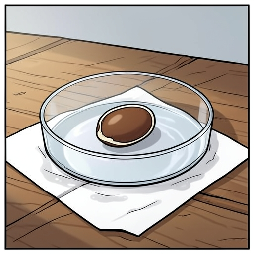
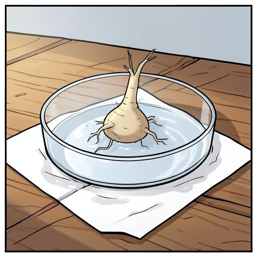
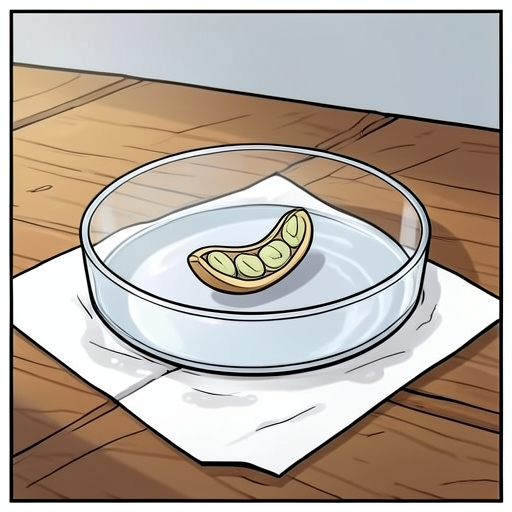
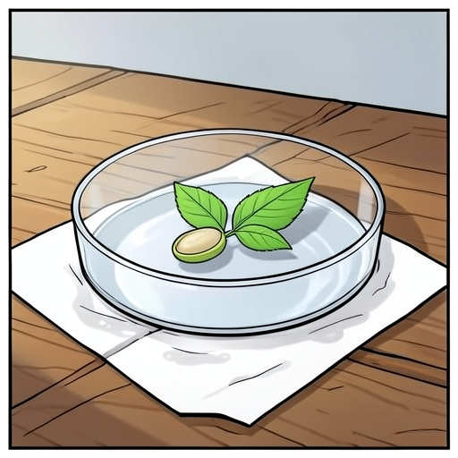

01Семя набухло, но ростка нет
Семя фасоли в чашке Петри
На начальной стадии прорастания семя фасоли впитывает воду и набухает. Внешний белый рубчик становится заметным
Биология · 6 класс · 4 кадра
Технический пилот SANA: Qwen создал сценарий, FLUX нарисовал четыре кадра в облаке. При проверке обнаружены ошибки в изображении стадий развития — они отмечены ниже. Реплики выводятся отдельно от картинки.

01Семя набухло, но ростка нет
На начальной стадии прорастания семя фасоли впитывает воду и набухает. Внешний белый рубчик становится заметным

02Появился светлый корешок
Корень прорастает через семенную кожуру и укрепляется в салфетке. Он тонкий и белый, направляется вниз

03Побег поднимается к свету
Из верхней части семени вырастает изогнутый побег. Семядоли еще не раскрыты, но уже видны

04Появились первые настоящие листья
Семядоли раскрываются, и на побеге появляются два первых настоящих листа. Семя теперь питает растение до появления фотосинтезирующих листьев